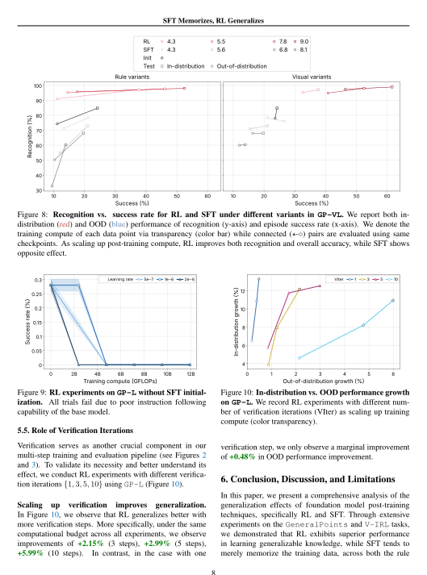

Paper-ready figures. Right from Claude Code.
Ask for a plot. Get a figure sized for your venue, readable in print and consistent across your paper. A Claude Code skill for matplotlib and seaborn.
fig7.json├─ GP-VL│ ├─ training init · sft · rl│ └─ final SFT · Init · RL└─ V-IRL-VL ├─ training init · sft · rl ├─ final SFT · Init · RL └─ previous_sota 44.44
data = json.load(open("../data/fig7.json"))["V-IRL-VL"]final = data["final"]sota = data["previous_sota"]print("takeaway:", final, "previous SOTA", sota)assert final["SFT"] < final["Init"] < sota < final["RL"] fig, (ax, ax_bar) = plt.subplots(1, 2, figsize=(3.3075, 3.3075))for key, name, color, style, marker in series: s = data["training"][key] ax.plot(s["gflops"], s["smoothed"], color=color, linestyle=style)ax.axhline(sota, color=colors["ink"])for i, m in enumerate(methods): ax_bar.bar(i, final[m], color=bar_colors[m])ax.legend(handles, names)finalize_figure(fig, [ax, ax_bar])



See how good it looks. Same paper, same data, redrawn.

(a) Language-only

(b) With vision
Figure 5: Success rate (%) - GFLOPs trendlines for RL and SFT on GeneralPoints and V-IRL. The top row shows in-distribution performance, while the bottom row shows out-of-distribution performance. Results are presented for both pure language (-L) and vision-language (-VL) variants of each task. For GeneralPoints, we report the episode success rate, while for V-IRL, we report per-step accuracy with overall success rate in Figures 1 and 18. Detailed evaluation setups (and curve smoothing) are provided in Appendix C.3.

(a) Language-only

(b) With vision
Figure 5: Success rate (%) - GFLOPs trendlines for RL and SFT on GeneralPoints and V-IRL. The top row shows in-distribution performance, while the bottom row shows out-of-distribution performance. Results are presented for both pure language (-L) and vision-language (-VL) variants of each task. For GeneralPoints, we report the episode success rate, while for V-IRL, we report per-step accuracy with overall success rate in Figures 1 and 18. Detailed evaluation setups (and curve smoothing) are provided in Appendix C.3.

Figure 6: Comparison of out-of-distribution performance under rule variants. We report the success rate for GeneralPoints and per-step-accuracy for V-IRL. For each subplot, RL and SFT are trained with equal computation, and their shared initial checkpoint (marked as Init) is set as baseline. Detailed setups are provided in Appendix C.3.
(a) GP-VL
(b) V-IRL-VL
Figure 7: Comparison of out-of-distribution performance under visual variants. Similar to Figures 5 and 6, we present both the performance dynamics (shown as lines) and final performance (shown as bars) for visual out-of-distribution evaluations. The previous state-of-the-art on V-IRL VLN mini benchmark (Yang et al., 2024a) is marked in orange. Detailed evaluation setups (and curve smoothing) are provided in Appendix C.3.

Figure 6: Comparison of out-of-distribution performance under rule variants. We report the success rate for GeneralPoints and per-step-accuracy for V-IRL. For each subplot, RL and SFT are trained with equal computation, and their shared initial checkpoint (marked as Init) is set as baseline. Detailed setups are provided in Appendix C.3.

(a) GP-VL

(b) V-IRL-VL
Figure 7: Comparison of out-of-distribution performance under visual variants. Similar to Figures 5 and 6, we present both the performance dynamics (shown as lines) and final performance (shown as bars) for visual out-of-distribution evaluations. The previous state-of-the-art on V-IRL VLN mini benchmark (Yang et al., 2024a) is marked in orange. Detailed evaluation setups (and curve smoothing) are provided in Appendix C.3.

Figure 8: Recognition vs. success rate for RL and SFT under different variants in GP-VL. We report both in-distribution (red) and OOD (blue) performance of recognition (y-axis) and episode success rate (x-axis). We denote the training compute of each data point via transparency (color bar) while connected (⋆-◦) pairs are evaluated using same checkpoints. As scaling up post-training compute, RL improves both recognition and overall accuracy, while SFT shows opposite effect.

Figure 9: RL experiments on GP-L without SFT initialization. All trials fail due to poor instruction following capability of the base model.

Figure 10: In-distribution vs. OOD performance growth on GP-L. We record RL experiments with different number of verification iterations (VIter) as scaling up training compute (color transparency).

Figure 8: Recognition vs. success rate for RL and SFT under different variants in GP-VL. We report both in-distribution (red) and OOD (blue) performance of recognition (y-axis) and episode success rate (x-axis). We denote the training compute of each data point via transparency (color bar) while connected (⋆-◦) pairs are evaluated using same checkpoints. As scaling up post-training compute, RL improves both recognition and overall accuracy, while SFT shows opposite effect.

Figure 9: RL experiments on GP-L without SFT initialization. All trials fail due to poor instruction following capability of the base model.

Figure 10: In-distribution vs. OOD performance growth on GP-L. We record RL experiments with different number of verification iterations (VIter) as scaling up training compute (color transparency).
Figures of Chu et al., SFT Memorizes, RL Generalizes, ICML 2025, arXiv:2501.17161, CC BY 4.0, laid out as on their pages with their original captions; body text left out. Left: Claude Code without the skill. All redrawn pages →
See the difference. On real papers, every chart, every layout.
Two commands. Then ask for a plot.
/plugin marketplace add bigohofone/paper-figure-skill /plugin install paper-figure@paper-figure-skill